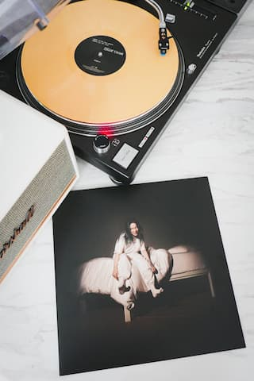

About
Billie Eilish Pirate Baird O'Connell (born on December 18, 2001) is an American singer-songwriter. She first gained public attention in 2015 with her debut single "Ocean Eyes", written and produced by her brother Finneas O'Connell, with whom she collaborates on music and live shows. In 2017, she released her debut extended play (EP), titled Don't Smile at Me. Commercially successful, it reached the top 15 of record charts in numerous countries, including the US, UK, Canada, and Australia.
Eilish's first studio album, When We All Fall Asleep, Where Do We Go? (2019), debuted atop the US Billboard 200 and UK Albums Chart. It was one of the best-selling albums of the year, buoyed by the success of its fifth single "Bad Guy", Eilish's first number-one on the US Billboard Hot 100. This made her the first artist born in the 21st century to release a chart-topping single. Since then, Eilish has won numerous accolades, including multiple Grammy Awards and the Academy Award for Best Original Song in 2022 for the James Bond theme song "No Time To Die". Her subsequent singles "Everything I Wanted", "My Future", "Therefore I Am", and "Your Power" peaked in the top 10 in the US and UK. Her second studio album, Happier Than Ever (2021), topped charts in 25 countries.
Discography
- Don't Smile At Me
- When We All Fall Asleep, Where Do We Go?
- Happier Than Ever
- Guitar Songs
Upcoming Tour Dates
- March 17-19 - Lollapalooza Argentina
- March 17-19 - Lollapalooza Chile
- March 21-22 - Asunción, Paraguay
- March 23-26 - Festival Estereo Picnic
- March 24-26 - Lollapalooza Brazil
- March 29 - Mexico City, MX
- March 31 - Monterrey, MX